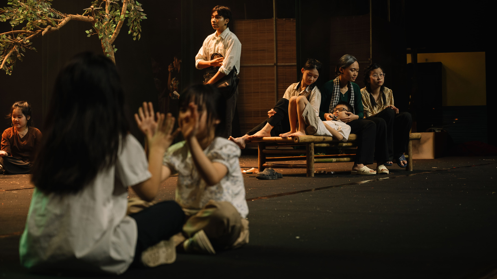
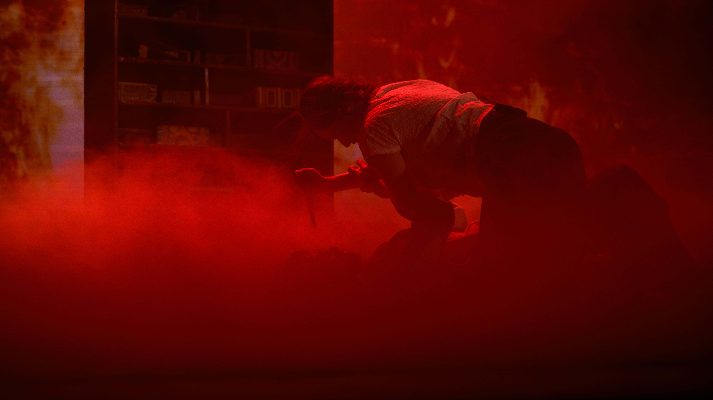

Sơ lược về nội dung
Câu chuyện theo chân nhân vật chính là Trọng, 28 tuổi, quê Thanh Hóa, từng làm điều dưỡng sinh ở trại tập trung thời chiến tranh. Lần theo những mẩu kí ức lờ mờ của mình về ngôi làng ngày xưa gia đình mình từng sinh sống, anh quay lại đó với mục đích tìm lại người mẹ và em gái đã mất tích từ 18 năm trước của mình
Tại đây, anh gặp được Hoa, cô gái được toàn thể dân làng kính trọng và đặt cho biệt danh "người truyền tin của thần" vì ban phát cho cả làng thứ nước thánh chữa được căn bệnh tâm linh mà mọi người mắc phải. Tuy nhiên, khi càng điều tra sâu hơn về tất cả mọi thứ, từng mảng sự thật trần trụi bắt đầu dần được hé mở, tiết lộ những điều cấm kị mà dường như không ai được phép có quyền biết đến.
